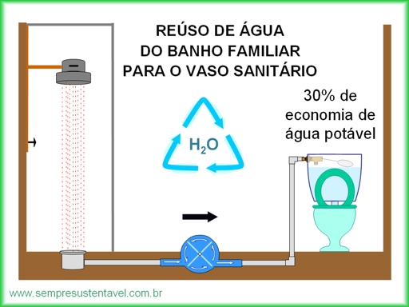

Captação de Água
A melhor solução para captação de água.
Objetivo +
Devido ao grande desenvolvimento populacional, o consumo de recursos hídricos o tem um crescimento desordenado, causando um grande caos.
A água vem se tornando um produto cada vez mais caro e escasso, um dos principais problemas que envolvem o seu consumo é a questão do desperdício, que ao lado da poluição vem com o tempo inutilizando e esgotando as reservas de água de diversos locais. A população acaba não dando destaque para este recurso que é de extrema importância para a vida e acaba usando-o de forma irracional, com a ilusão de que é um recurso inesgotável e gratuito.
Para isto existe a captação da agua da chuva que pode ser mantida em uma cisterna (reservatório),
assim mantendo a agua limpa e em uma temperatura ideal, o uso de cisterna e considerado uma das melhores e eficazes alternativa quando o assunto e economia de agua.
Como funciona +
A água e captada diretamente da chuva com a calha e dirigida para o reservatório, onde passa por um processo de osmose reversa, onde um filtro semipermeável faz a limpeza da agua tornando-a utilizável para reuso, assim como a imagem abaixo:
Vantagens
• Economia de 50% na conta de água
• Pode ser instalado em qualquer ambiente
• Vários tamanhos de reservatórios
• Ajuda conter enchentes
Aonde é armazenado a Água+
Os tanques geralmente são encontrados em escolas, condomínios, prédios e fazendas. São feitos de um material conhecido como PEAD (polietileno de alta densidade), que serve para deixar o tanque com máxima impermeabilidade e resistência, tornando-o bem resistente para poder suportar a pressão da água quando estiver cheio. O tanque é indicado para armazenamento de água potável, ou seja, aquela água que utilizamos para banhos, preparação de alimentos, beber, lavar louças e etc. Um tanque pode durar até 20 anos
Diferente das cisternas, os tanques possuem uma função diferenciada, apesar de captarem água eles servem para armazenar água potável (própria para o consumo humano) em alimentos, lavagem de louças, etc. Os tanques não devem ficar submersos, eles não suportam a pressão da terra, por isso devem ser mantidos em superfície terrestre.
Os Tanques são muito resistentes, desta forma não permitem a proliferação de nenhum tipo de microrganismo, seu tempo estimado é de aproximadamente 20 anos.
Exemplos de uma forma de Reuso +
Reúso da água do banho é um caminho interessante para a redução de uso da água potável em aplicações simples como por exemplo nas descargas dos vasos sanitários. Essa água é denominada de água cinza (Greywater). Bastante utilizada para irrigação em outros países.
Mantendo o conceito da auto montagem, e com materiais de fácil obtenção, estamos desenvolvendo alguns projetos experimentais que permitem reduzir o uso da água residencial em cerca de 30%, sem aplicação de tecnologias complexas e sem perigos para a saúde do usuário.
- Sistema de filtro simples e de fácil limpeza.
- Sistema de desinfecção e conservação.
A água de banho, apesar de ser muito mais limpa do que a do esgoto, apresenta aspectos químicos e biológicos especiais, cuja solução está sendo estudada por muitos grupos interessados no seu reuso. Essa água é constituída por: resíduos de pele, sabões, detergentes, creme dental, cabelos, gorduras, suor, urina, saliva, placas bacterianas provenientes de ralos entre outros.

Funcionamento da Drenagem +
Os tanques geralmente são encontrados em escolas, condomínios, prédios e fazendas. São feitos de um material conhecido como PEAD (polietileno de alta densidade), que serve para deixar o tanque com máxima impermeabilidade e resistência, tornando-o bem resistente para poder suportar a pressão da água quando estiver cheio. O tanque é indicado para armazenamento de água potável, ou seja, aquela água que utilizamos para banhos, preparação de alimentos, beber, lavar louças e etc. Um tanque pode durar até 20 anos. Esse sistema é usado quando existe uma mina ou nascente nas proximidades. A captação de água de minas ou nascentes consiste em drenar essas fontes por tubos. Essa ação deve ser realizada na época mais seca do ano.
Esse sistema de captação é desenvolvido com a construção de um buraco no solo de aproximadamente 2m de distância do olho-d'água, até que o fundo do buraco fique cheio de água. Em seguida, é aberta uma valeta a partir desse buraco até o terreno firme mais próximo, no sentido morro abaixo, onde será construída uma caixa de passagem. O buraco é então ligado à caixa por tubos pré-moldados de concreto, de 20cm a 30cm de diâmetro. Os tubos podem ser instalados de várias formas, dependendo das características do local onde serão instalados. A caixa de passagem pode ser feita com blocos de concreto revestidos com argamassa à base de cimento. A caixa deve ter uma tampa para evitar a entrada de animais e folhas. O buraco e a valeta só devem ser aterrados após a colocação dos tubos perfurados e dos tubos normais e após a execução da caixa de passagem. Desta sairá a tubulação de abastecimento da propriedade.
É necessário proteger o local da nascente com cercas, para evitar a entrada de animais ou qualquer outro agente poluidor.
CAPTAÇÃO EM POÇOS ARTESIANOS +
Os poços artesianos são estruturas que ficam no solo para a exploração dos lençóis freáticos e aquíferos. Eles são responsáveis por captar cerca de milhares de metros cúbicos de água por dia, que podem ser utilizados em diversas situações. O sistema pode ser artesiano que pode realizar todo o processo sem a ajuda de uma bomba ou sem artesiano que precisam ser bombeados. Para criar um poço artesiano é necessária uma área de 7 metros de largura por 25 metros de comprimento, além do emprego de 2 a 4 caminhões para se conseguir um poço de uma profundidade que varia entre 100 e 1.500 metros. Após a perfuração, o poço é revestido com tubos de aço, e requer um filtro especial. Os poços artesianos devem ser cuidados e fiscalizados de forma preventiva, para evitar problemas geológicos e até mesmo mecânicos. A cada dois anos no máximo, devem ser realizadas análises para apurar a qualidade da água, a integridade dos equipamentos, e no caso de poço semi artesiano, conferir a bomba.
Desperdício de Água+
O Desperdício de água é um problema ambiental que pode causar sérios problemas para a humanidade, tendo em vista de que apenas 3% da água do planeta é desde sua nascente, própria para o consumo. Desta forma é necessário tomar providências para encontrar possíveis soluções.
Este desperdício pode ser gerado de diversas maneiras, dentre elas estão: empresas de agricultura, cidadãos e até mesmo o sistema de distribuição da águe.
É possível realizar uma minimização de gastos, fazendo com que a água seja menos desperdiçada, porém, assim como a poluição e até mesmo a captação da água, não é algo que somente um gesto gere todos os resultados, portanto é necessária uma conscientização da população, para realizar ações como:
• Diminuir o tempo de banho;

• Escovar os dentes e lavar louça com a torneira desligada
• Economizar água em lavagens domésticas (Lavagem de carro, quintal, banheiro e etc).
• Conserve a descarga regulada e evite possíveis vazamentos..